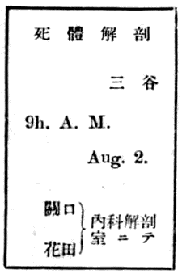

兄と彼れとは又同じ事を繰返して云ひ合つてゐるのに氣がついて、二人とも申合せたやうに押默つてしまつた。
兄は額際の汗を不愉快さうに拭つて、せはしく扇をつかつた。彼れは顯微鏡のカバーの上に
簡單に云ふと前の日の朝に彼れの妻は多量の咯血をして死んでしまつたのだ。妻は彼れの出勤してゐる病院で療治を受けてゐた。その死因について院長をはじめ醫員の大部分は急激な乾酪性肺炎の結果だらうと云ふに一致したが、彼れだけはさう信ずる事が出來なかつた。左肺が肺癆に罹つて大部分腐蝕してゐるのは誰れも認めてゐたが、一週間程前から右肺の中葉以上に突然起つた聽診的變調と、發熱と、腹膜肋膜の炎症とを綜合して考へて見ると粟粒結核の勃發に相違ないと堅く信じたのだ。咯血が直接の死因をなしてゐると云ふ事も、病竈が血管中に破裂する粟粒結核の特性を證據立てゝゐるやうに思はれた。病室で死骸を前に置いて院長が死亡屆を書いてくれた時でも、院長は悔みや手傳ひに來た醫員達と熱心に彼れの妻の病氣の經過を論じ合つて、如何しても乾酪性肺炎の急激な場合と見るのが至當で、斃れたのは極度の衰弱に起因すると主張したが、彼れはどうしても腑に落ちなかつた。妻の死因に對してさへ自分の所信が輕く見られてゐる事は侮辱にさへ考へられた。然し彼れは場合が場合なのでそこに口を出すやうな事はしなかつた。而して倒さに着せられた白衣の下に、小さく平べつたく、仰臥さしてある妻の死骸を眺めて默然としてゐた。
默つて坐つてる中に彼れの學術的嗜欲はこの死因に對して激しく働き出した。自分は醫師であり又病理學の學徒である。自分は凡ての機會に於て自己の學術に忠實でなければならない。こゝに一個の死屍がある。その死因の斷定に對して一人だけ異説をもつものがある。解剖によつてその眞相を確める外に途はない。その死屍が解剖を不可能とするのなら是非もないが、夫れは彼れ自身の妻であるのだ。眞理の闡明の爲めには他人の死體にすら無殘な刃を平氣で加へるのだ。自分の事業の成就を希ふべき妻の死體を解剖臺の上に運んで一つの現象の實質を確定するのに何の躊躇がいらう。よし、自分は妻を學術のために提供しよう。さう彼れは思つた。暫らく考へてから彼れは上の考へにもう一つの考へを附加へた。妻は自分が解剖してやる。同じ解剖するなら夫に解剖されるのを妻は滿足に思ふだらう。自分としては自分の主張を實證するには自分親ら刀を執るのが至當だ。その場合解剖臺の上にあるものは、親であらうが妻であらうが、一個の實驗物でしかないのだ。自分は凡ての機會に於て學術に忠實であらねばならぬ。
彼れは綿密にこの事をも一度考へなほした。彼れの考へにはそこに一點の非理もなかつた。しつかとさう得心が出來ると、彼れは夫れを院長に告げて許可を受けた。その晩彼れは親族兄弟の寄合つてゐる所で所存を云ひ出した。云ひ出したと云ふより宣告した。親族は色々反對したが甲斐のないのを知ると、せめては肺部丈けの解剖にしたらどうだと云つた。若し死因が粟粒結核なら他の諸機關も犯されるのだから肺部だけですますわけには行かないと彼れは云つた。夫れなら他人に頼んでして貰へと云つた。彼れは自分のするのが一番いゝんだと云つた。そんな不人情がよくも出來るものだと涙を流して口惜しがる女もゐた。彼れは妻の介錯は夫がするのが一番いゝのだと云つて動かなかつた。妻の里の親達は勿論、親族の大多數は、その場の見えばかりからでも、彼れの決心に明らさまに反對な色を見せた。學術に對する俗衆の僻見をこれほど見せつけられると、彼れは意地にも初一念を通さずには置けなかつた。而して妻は自分に
「お前は自分の生活と學術とどつちが尊いと思つてゐるんだ」
兄は扇をたゝむと、
「僕は學術を生活してゐるんです。僕の生活は謂はゞ學術の尊さだけ尊いんですよ。……もういくら論じたつて同じぢやありませんか」
さう云つて彼れは立上つた。而して壁際のガラス張りの棚の中から、ミクロトームのメスを取り出して
「そんなものを使ふのか」
彼れは磨ぐ手をやめて、眼近くメスを見入りながら、
「解剖に使ふんぢやない、是れはプレパラートの
「俺れはこの
そこに小使が這入つて來て、死亡室に移してある彼れの妻の處置を如何したらいゝかと彼れに尋ねた。九時から解剖をするからすぐ用意をして置けと彼れは命じた。兄は慌てゝそれはもう少し待つてくれと云つたが、彼れは敵意に近い程な激しい態度で兄の言葉を遮りながら小使を死亡室に走らした。
兄は歎息して默つてしまつた。彼れも默つた。部屋の隅の瀬戸物の
眞黒に古びてはゐるが極めて正確な懸時計の針が八時五十分を指した時、小使がまた現はれて解剖室の用意が出來てゐる事を報告した。彼れは一種の勇みを感じた。上衣を脱いで眞白な手術衣に手を通しながら、
「兎に角
「俺れは立合はせて貰はう」
この兄の言葉は彼れにも意外だつた。「どうして」とその
「お前と俺れとは感情そのものが土臺違つてしまつたんだ。假りにも縁があつて妹となつてくれたものを、お前はじめ冷やかな心で品物でも取扱ふやうに取扱ふ人達ばかりに任せて置く氣にはどうしてもなれないんだ。お前はお前で、お前の
「無論認めますがね、解剖と云ふものは慣れないと一寸我慢の出來ない程殘酷に見えますよ。それでよければいらつしやい」
さう云つて彼れは兄にも手術衣を渡した。

と彼れ自身が無造作に書いた半紙の掲示が、廊下をふきぬける朝風にそよいでゐるのを見て、二人は廊下の出口で解剖室用のスリッパに草履をはきかへた。薄暗く冷たい準備室に兄を待たして、彼れは防水布の胸あてをし、左の手にゴムの手袋をはめた。兄弟は互に顏を見合せて、互にひどく血色が惡いと思ひ合つた。不思議な身ぶるひが彼れを襲つた、彼れはいつの間にか非常に緊張してゐた。手を擴げて眼の前にもつて來て見ると、いつになく細かく震へてゐた。意志の強い彼れはそれを不愉快に思つた。而してたしなめるやうに右手を二三度嚴しく振りまはしてから、兄と共に解剖室に這入つて行つた。
解剖臺の二つ置いてある廣やかな解剖室の白壁は眞夏の朝日の光と、青葉の射翠とで青み亙るほどに
一體彼れは醫者に似ず滅多に笑はない口少なゝ男だつた。内科の副醫長の囘診だと云ふと、看護婦などはびり／＼した。人をおこりつけるやうな事は絶えてしなかつたが、彼れは何處にも他人を
彼れは兄に椅子を與へて置いて死屍の乘つてゐる解剖臺のそばに來た。若い二人の醫學士は煙草を窓からなげ捨てゝ、机について記録の用意をした。見學の人達もそろ／＼臺のまはりに集つた。彼れは二人の助手と二人の記録者とに「今日は御苦勞を願ひました」ときつぱり挨拶して解剖臺の上に鋭い眼をやつた。死んだ妻の前に立つ彼れを思ひやつて、急にヒステリックにむせび出した二人の看護婦の泣き聲が後ろで聞えた。
無造作に死體を被つた白衣の上には小さな黒い
三谷Ｙ子。二十歳。八月一日午前七時死亡。病症、乾酪性肺炎。
三谷Ｙ子――その名は胸をぎゆつとゑぐるやうに彼れの網膜に寫つた。彼れは然し自分の感情を人に
昨日まで彼れの名を呼び續けに呼んで、死にたくないから生かしてくれ／＼と悶え苦んだ彼れの妻は、悶えた甲斐も何もなく痩せさらぼへた死屍となつて、彼れの眼の下に仰臥してゐた。顏と陰部とを小さなガーゼで被うてある外は、死體にのみ特有な支那の
見學の人達は
「メス」
やがて彼れの發したこの一言に、室内は一時小さくどよめいた。助手の一人は解剖臺に取りつけてある龍頭をひねると、水は
彼れはこの
彼れは靜かに準備の出來るのを待つてゐた。人々がもとの位置に立ちかへると、彼れは手術衣の腕を高々と看護婦にまくらせた。
乾酪性肺炎か粟粒結核か、事の眞相を
「解剖上の現象」
かう彼れは記録者に報告しておいて、メスを死體の喉許にあてがつたと思ふと、覺えのある腕の冴えを見せて、まつすぐに引きおろした。こんな事には慣れきつた二人の看護婦も思はず兩手を顏にあてゝ下を向いてしまつた。兄は二三歩後ろによろけて、部屋中に響きわたるやうな鈍い
どす黒い血が解剖臺の眞白な表面のあちこちを汚し始めた。眠さうな音を立てゝ窓際でまはつてゐる蠅取機の甘酸い香を離れて解剖臺の方に飛んで來る蠅の數はふえた。牛肉屋の前を通つた時のやうな一種の血なまぐさい香が忽ちに清淨な空氣を汚なくした。
彼れの解剖の手際は水際だつてゐた。見る見る中に胸部から腹部にかけての諸機關は個々に取除けられて、左胸部に肺癆の爲めに潰滅した肺の殘塊が咯啖樣の粘液に取りまかれて殘つてゐるのと、直腸部に填充した脱脂綿が
内臟が抉出されてしまつて見ると、見學の人々は死體に對して本能的に感ずる一種の遠慮も、今朝の解剖に限つて存在する死體と執刀者との異常な關係なども、忘れてしまつて、學術的の興味に釣り込まれた。あるものは強直した死體の手の指を強ひてまるめて拳固を造り、心臟を持出して大さを較べて見た。而して、
「隨分この
と云つて彼れに示したりした。
「どつちだらう、
そんな事を云ひ合ふ人々もあつた。
彼れは内臟を一つ／＼黒塗の滑らかな臺の上に乘せて腦刀で縱横に
「脾臟。形状普通。著しく擴大。色普通。中部到る處に粟粒状結節あり」
彼れは冷靜に報告した。腹膜にも肋膜にも多數の結節を認めた。この上は
彼れは大膿盆に置かれた肺臟に手をかけながら、貪るものゝやうに死體の頭部に眼をやつた。顏は雪白のガーゼに蔽はれてゐて見えないが、髮の毛は、
 にぐつと引きまはしたい衝動に襲はれた。彼れの感じたその衝動は研究心以外の不純なある感情―― Sadistic と言ふ言葉でゝも現はさなければならないやうな――が湧いたのではないかと思ふほどに強いものだつた。彼れは今までの通り、見た所は冷靜であつたが、その心の中には熱い一種の欲望が燃えて來た。彼れはとう／＼助手に指圖して腦の抉出に取りかゝつた。
にぐつと引きまはしたい衝動に襲はれた。彼れの感じたその衝動は研究心以外の不純なある感情―― Sadistic と言ふ言葉でゝも現はさなければならないやうな――が湧いたのではないかと思ふほどに強いものだつた。彼れは今までの通り、見た所は冷靜であつたが、その心の中には熱い一種の欲望が燃えて來た。彼れはとう／＼助手に指圖して腦の抉出に取りかゝつた。又ざわ／＼と一しきり人々が動いて位置をかへた。助手は根元で無造作に結へてある
その準備が出來ると彼れは死體の枕許に立つた。而してメスを右の耳の下の髮の分け目の所につき刺した。顏の上には前頭部の髮の毛がもつれあつて物凄く被ひかぶさつてゐる。
突然彼れのメスを持つた右手が、しつとり冷たい手のやうなもので握りしめられて自在を失つた。緊張し切つた彼れの神經は不思議な幻覺に働かれて、妻のこはばつた手が力強く彼れの無謀を遮ぎるやうにも思つた。と、冷水を腦の
「氣でも狂つたのか、亂暴にも程がある」
かすかな、然し恐ろしい程力のこもつた聲が同時に彼れの耳を打つた。見かへる鼻先きに
たゞ瞬間の奇快な妄想ではある。然しこの時彼れの眼に映つた兄は兄のやうには見えなかつた。妻の死靈に乘り移られた不思議な野獸が、牙をむいて逼りかゝつて來たやうに思はれた。彼れの大事な仕事を土臺からひつくり返さうとする大それた邪魔者のやうに思はれた。緊張し切つて稍平靜を失ひかけた彼れの神經は疾風に見舞はれた冬木の梢のやうにぎわ／＼と怒り立つた。彼れは兄弟の
彼れの命令によつて、兄は看護婦に附添はれて、失神したまゝ病室に運ばれた。
「あれは僕の兄です。看護で頭が疲れてゐる所に、見た事のないこんな有樣を見たもんだから……餘計な御心配をかけました。……僕は少し疲れた。關口君、君一つやつてくれ給へ。腦膜が見たいんだから注意してなるべく完全に剥離してくれ給へ」
かう彼れは助手に云つた。彼れは努めて
實際手を洗つて窓際に來て見ると彼れは相當に疲勞してゐた。彼れは
八月の日は既に高く上つて、
彼れは庭から來る照り返しを避けるやうに
解剖臺からはごし／＼と鋸で物をひく音が聞こえた。彼れの妻の頭蓋骨は今椀の形にひき割られてゐるのだ。彼れは見返へらうとはしなかつた。
日影になつた建物の窓に二人の看護婦の姿が現はれた。二人は彼れが解剖室から見てゐる事には氣が附かないで、さも親しげにより添つてゐた。忙しい仕事から漸く
解剖臺からは鋸の音と
彼れは現在華やかな眞夏の景色を眺めながら、それと少しの關係もない自分を見出した。一度後ろを振向けばそこに彼れの世界があるのだ。まざ／＼と何事も明らさまな晝の光の下で、最愛のものゝ腹を割き頭を
むしやくしやして彼れは
「出來ました」
助手が彼れの方にかう呼びかけた。默想は破れてしまつた。彼れは今までの慣習に引きずられてその先きを辿らなければならないのを知つた。而して再び解剖臺の方に進んで行つた彼れの顏には前の通りな冷靜な緊張した色だけが漲つてゐた。人々は暑がつて顏や手をハンケチで拭つたが、彼れの顏には汗一つ見えなかつた。
彼れは然し死體の頭部に眼をやる事はしなかつた。而して黒塗の臺の上に置いてある腦膜を取上げた。脾臟程に顯著ではないけれども結節は可なり明瞭に觀察された。妻が死前に激烈な頭痛を訴へて、思想に一種の混亂を來した
もう疑ふべき餘地は全くない。彼れの診斷は院長はじめ多數の醫員の所見を壓倒して勝利を得たのだ。彼れの隻眼はまたひとりでに輝いた。窓際で休息してゐた時彼れを犯した不安は、いつの間にか忘れられて、彼れは又熱意をこめて目前の仕事に沒頭して行つた。
「是れはひどい」
と誰れかゞ驚歎する聲がすぐ起つた。彼れは思はず、最愛の妻の肺臟を、戰利品でもあるかの如く人々の眼の前に放り出した。
「死因。粟粒結核の結果と見るを至當なりとす」
昂然として彼れは記録者の方に向いてかう云つた。
列席者の中でそれに異議を稱へようとするものは一人もなかつた。
「胃」
彼れは破竹の勢でべちや／＼に潰れた皮袋のやうなものを取上げて臺の上に置いた。彼れの目的が達せられると、彼れの熱心は急に衰へて一時も早く悲しい孤獨に歸りたかつた。彼れは心の底にすゝり泣きのやうな痛みを感じた。然し濟ますべき事は順序通り濟ましてしまはねばならなかつた。見學者の中にも欠呻をしながら、患部の切片を入れたガラス瓶を
胃の解剖からは何の結果も得べき筈はない、さう彼れは思ひながらも、型の通り鋏を取つて一方を切開いて見た。その内部からは既に胃壁に凝着した血液が多量に黒々として現はれ出た。
「咯血を嚥下したんだな」
思はざる所に不意におもしろい事實を見出したやうに、一人の醫員は、死體が同僚の妻である事も忘れて、かう叫んだ。
彼れはこの有樣を見ると思はず、手の甲で眼をかくしながら二三歩たじろいて後ろを向いてしまつた。この有樣を見た瞬間に、妻の斷末魔の光景が、彼れの考へてゐた學術の權威、學徒の威嚴、男の沈着、その外凡ての障碍物を爆彈のやうにたゝき破つて、いきなり彼れの胸にまざ／＼と思ひ浮べられたからだ。
それはまだ三十時間とはたゝない昨日の
「氣がちがひさうに頭が痛みます。私の腦は破裂するんぢやないでせうか。私はもつと生きてゐたいんですから、先生、どうか助けて下さい。殺さないで下さい。どうか／＼……あゝ痛い／＼／＼……死ぬのはいやです……私は死にたくないんです」
さう云ひながら彼女はそこに居合はした醫員にすがり附かうとした。醫員は惡靈にでも追はれたやうに顏の色をかへて飛び退いた。
「あなたゐて下すつたのね。私死んではいけないわね。私、死ぬやうな事はしてゐませんよ。助けて頂戴、ね、ね。私本統に死ぬのはいやなんですもの。
その時彼れはかたびらの胸許にどつと生暖いものを感じた。見ると夫れは火のやうな鮮血だつた。妻の顏は一段と蒼ざめて、瞳はつり上つて急に生氣を失つてゐた。やゝともすると居睡りでもするやうに彼女の顏は彼れの胸にもたれかゝつて來た。
「Ｙ子。氣をしつかりお持ち。何んでもないんだからな」
彼れは思はず妻の耳もとでこんないゝ加減を叫んだ。而して彼女を靜かに臥かした。
暫くすると彼女はまた前のやうに異常な活氣を現はして起上つた。而して又多量の咯血をした。さう云ふ事が二度も三度も續けて行はれた。
何時の間にか世の中は眩しいやうな朝の光になつてゐた。
「こんなぢや……血が無くなるだけでも死にます……コップ……コップを下さい」
看護婦が水をついでコップを持つて來ると、彼女は別に飮むでもなく、それを枕許に置かした。而してコップを見入りながら何かを考へてゐるやうだつたが、やがてむく／＼と身を起すと又咯血した。然し彼女は瀕死の病人に似もやらず、
Ｙ子は暫らく恨しげにコップを見やつてゐた。と、いきなりそれを脣にあてゝ自分の血をぐつ／＼と飮みはじめた。
座にあるものは思はず
彼れが正氣を取かへしてコップを妻からもぎ取つた時にはもうそれは
是れが彼女の死に反抗する最終の激しい努力だつた。彼女の意識はだん／＼不明瞭になつたが、それでも咯血する
「アツ……」
やがて凡ての執着を、帛を裂くやうな鋭く高い一聲に集めて絶叫すると、その
胃を鋏で開いて見た瞬間に、是れだけの記憶が、同時に、その癖正確な順序を取つてはつきりと彼れの心を襲つたのだ。最後の絶叫を彼れはもう一度たしかに聞いたと思つた。三日も不眠不休でゐた彼れの腦は輕度の貧血を起して、胸許に嘔氣をさへ覺えた。見學の人々は彼れが突然よろけて後ろを向いてしまつたのを見て
「くだらない事を想ひ出したらもう解剖がいやになつた。關口君、花田君勝手ですが跡の始末を君等にお頼み申します。夕方には僕が引取りに來ますから」
かう彼れは後ろを向いたまゝで云つた。人々はさすがにいかにも氣の毒さうに彼れを見やつた。
彼れは武士が武器を捨てゝ遁世する時のやうな心持ちでゴムの手袋を脱ぎ捨てた。
 々
々凡ては彼れの前で空に見えた。妻の死因が粟粒結核であるのを確めて、たつた
掲示場の前を通る時彼れは今日の解剖の廣告が掲示板にぶら下つて風にひらめいてゐるのを見た。彼れは力をこめて
「稚氣、衒氣……而かも嚴肅に取あつかはねばならぬ、妻の死體と記憶とをめちや／＼に踏みにじつて、心竊かに得意を感じた稚氣、衒氣！ 恥ぢて死ね」
部屋に歸つてからしつかりと考へる積りでゐながら、急性な彼れの本心は瞬時も彼れに餘裕を與へて置かなかつた。彼れは足早に廊下を歩きながら絶間なくこんな考へに驅り立てられた。
自分の部屋に這入らうとするところに小使が來て、彼れの兄の腦貧血はもう囘復して
實驗室――彼れの庵室とも、城郭とも、宮殿とも昨日まで思つて、この六年間
手術衣を脱いで
暫らくすると彼れの眼の中に無念の涙が熱くたまつて來た。身も魂も投げ込んだ積りで努力に努力を重ねて來た半生の生活は跡方もなく根こそぎにされて、彼れは凡ての人の生活から全く切り放なされてしまつたのを感ぜずにはゐられなかつた。凡ての科學者は疑はしげもなく銘々の研究にいそしんでゐる。彼等は自分の仕事にどれ程の自覺を持つてゐるのか、またどれ程自己省察の眞劍さを缺いてゐるのか、それは判らない。然し兎に角彼等は各自の研究室で實驗所でこつ／＼と働いてゐる。彼等は彼等だ。彼れは彼れだ。彼れにはもう彼等の心は通じなかつた。中庭を見やりながら彼れが考へた事は、理窟としてゞなしに、實感として
 はした。
はした。徒らに正確な懸時計は遠慮なくけうとい音に時を刻んでゐた。その音と、龍頭を流れ下る水の音とが、森閑とした眞夏の暑い沈默を靜かに破つた。ツァイス會社製の、無駄な飾りのない、然しいかなる點にも綿密な親切と注意との行き亙つた、從つてたくらまないで美しい直線や弧線の綜合を成就した顯微鏡も、今は彼れの使役を拒むものゝやうに見えた。彼れは又窓の外の並木を眺めた。二階から見るので梢だけが鳥瞰的に眼に映つた。それは今まで氣附かないでゐた珍らしい樹の姿だつた。一つの葉も光に向いてゐないのはなかつた。而して無邪氣に快濶に手をつなぎ合つて、夏の光の中に戲れてゐた。彼等はあの無邪氣と快濶とを以て、風にでも雨にでも小跳りするのだ。彼れの住む世界にもこんなものがあるのか。こんなものゝある世界にも彼れが住んでゐるのか。さう彼れは苦い心で思つた。
やゝ暫らくして彼れは長い溜息と共に椅子から立ち上つた。而して手術衣を脱がうとするとその衣嚢の中でかちつと堅いものにぶつかり合ふ音を聞いた。彼れは何げなく衣嚢に手を突込んで指先きに觸れたものをつかみ出して見ると、それは解剖臺から持つて來た四つのガラス瓶だつた。水より輕やかに澄んだ薄いアルコールが七分目ほど入れてあるその底に、表面だけ蛋白の凝固した小さな肉片が一つづゝ沈んでゐた。それを見ると彼れはぎくつとして夢から覺めたやうに解剖室の光景を思ひ浮べた。妻の――昨日までは兎も角も生きてゐて、彼れと同じに人間であつたその妻の形見といつては、これだけになつてしまつたのだ。如何して二人はこの世に生れたのだ。如何にして二人は十億の人間の中から互々を選び出して夫婦になつたのだ。如何して妻は彼れよりも先きに死んだのだ。如何して彼女の肉片は寸斷されてアルコールに漬けられるやうな運命に遇つたのだ。如何してこの偶然のやうな不思議が彼れの心をいつまでも／＼すゝり泣かせるのだ。
科學を生活する――何んといふおほそれた空言を彼れは恥かしげもなくほざいたものだ。
彼れはどう考へていゝか判らなかつた。然し彼れは考へ直して見るより外に道を知らなかつた。
深い絶望に沈んだ彼れはすがるやうな心になつてその瓶を四つとも取上げて自分の額にあてた。妻が死んでから今まで彼れの強い意志でせきとめてゐた涙が、燃えるやうに、盲いた眼からもはら／＼と流れ落ちた。